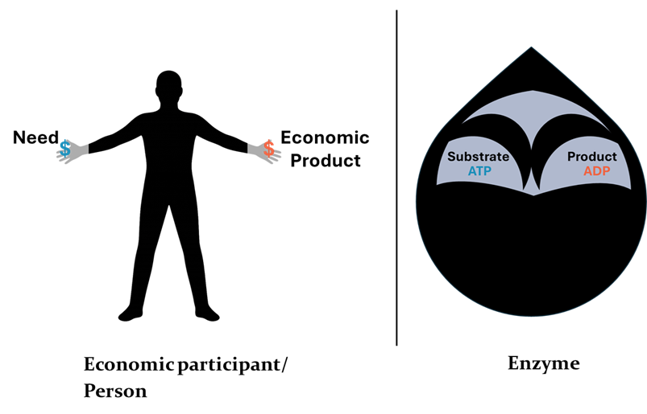
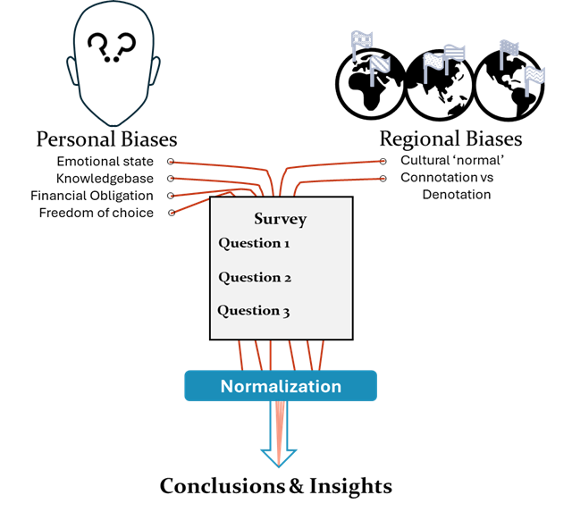

!DOCTYPE html>
<html lang="en">
<head>
  <meta charset="UTF-8">
  <meta name="viewport" content="width=device-width, initial-scale=1.0">
  <title>Grey Theorem Whitepapers</title>
	<!-- Link external CSS file -->
  <link rel="stylesheet" href="styles.css">
 
</head>
<body>
  <!-- Left Sidebar -->
  <div class="sidebar">
    <!-- Logo -->

      

    <!-- Navigation Menu -->
    <nav class="menu">
      <a href="About.html">About</a>
      
      <div>
        <a2>Services</a2>
        <div class="submenu">
          <strong><a href="Market_Research.html">Market Research</a></strong>
          <strong><a href="Economics.html">Economics</a></strong>
          <strong><a href="Life_Sciences.html">Life Sciences</a></strong>
          <strong><a href="Internal_Technologies.html">Internal Technologies</a></strong>
        </div>
      </div>
      
      <a style="color: #ffcc00;" href="Whitepapers.html">Whitepapers</a>
      <a href="Contact.html">Contact</a>
    </nav>
  </div>

  <!-- Right Content Area -->
  <div class="content">
    <h1><strong></h1></strong>
   <div style="display: flex; justify-content: flex-start; align-items: flex-start; flex-wrap: wrap; gap: 20px;">
  <a href="PublishWhitepapers/GreyTheorem_TreatiseEnzymaticEconomics.pdf" download 
     style="text-decoration: none; text-align: center;">
    
    <span style="display: block; font-family: Constantia, serif; font-size: 24px; color: #ffffff; margin-top: 8px;">
       Treatise on Enzymatic Economics
    </span>
	  <span style="display: block; font-family: Constantia, serif; font-size: 12px; color: #ffffff; margin-top: 8px;">
        Theorem on Enzymatic Logic and Mathematics Modeling in </span>
	  <span style="display: block; font-family: Constantia, serif; font-size: 12px; color: #ffffff; margin-top: 6px;">
		  Understanding, Measuring, and Forecasting Economic Product
    </span>
  </a>
	     <a href="PublishWhitepapers/GreyTheorem_NormalizingSurveyStrangeness_Oct2025.pdf" download 
     style="text-decoration: none; text-align: center;">
    
    <span style="display: block; font-family: Constantia, serif; font-size: 24px; color: #ffffff; margin-top: 8px;">
       Normalizing Survey Strangeness
    </span>
	  <span style="display: block; font-family: Constantia, serif; font-size: 12px; color: #ffffff; margin-top: 8px;">
        Considerations for Normalization in Correction of Survey Biases
    </span>
  </a>
		</p>
  </div>
</body>
</html>


